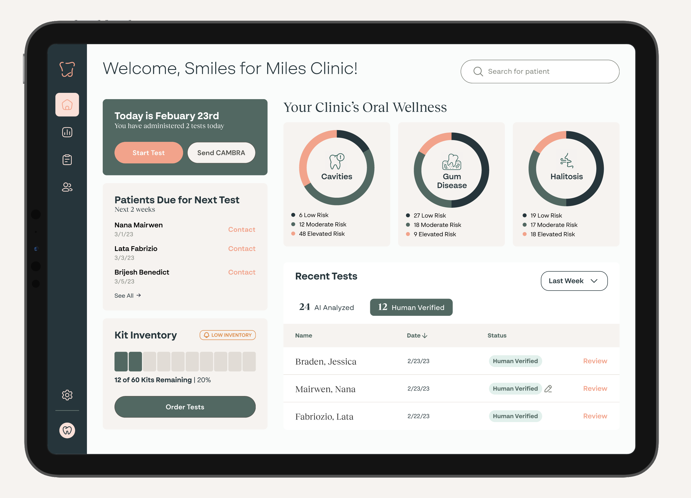
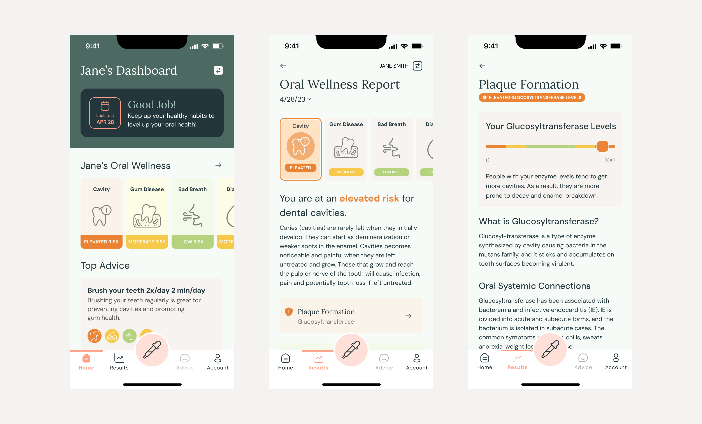
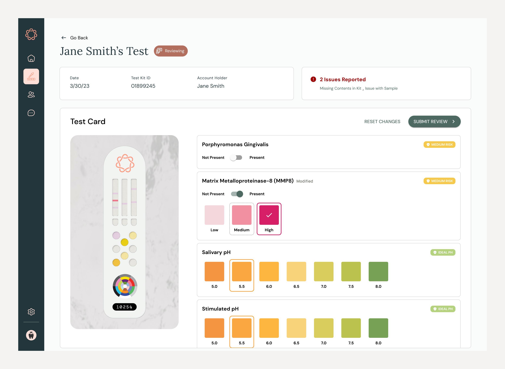
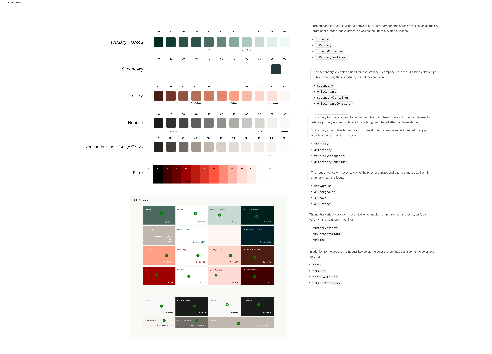

At-Home Oral Health Testing

Our client envisioned an at-home oral health test that would bring accessible and affordable care to dental deserts and improve awareness to oral-systemic health, oral health's connection to diseases such as diabetes and heart disease.
"...nearly 1.7 million people in the US did not have access to dental clinics within a 30-minute drive, and 24.7 million lived in dental care shortage areas."Dental Clinic Deserts in the US: Spatial Accessibility Analysis (2024)
Over 6 months, I led design for a mobile app to guide users through taking an at-home oral health test where they would provide a saliva sample and scan a test card. Computer vision would then interpret your scan and assess your risk levels. Finally, you would receive your results and tailored advice within the app recommendations to improve oral health.
I partnered with engineering to build a working MVP app for our client to use for a pilot and pitch to investors to secure additional funding.
Outcomes
- Partnered with Engineering team to build a pilot MVP of the end-to-end experience.
- Client pitched a working MVP and received a grant from a major dental association
- Coached a college hire with a technical background to play a Product Designer role
My Role
I led end to end design and design reviews with the client. With engineering, I handed off features and created a Material 3 theme to brand the solution. I collaborated with a copywriter to define the kind of content needed and
Team
Phase
Pre-Seed & Seed Stages
Industry
Healthcare
Onboarding

Health Education Through Accessible Jargon
We needed to make the dental jargon understandable for a wide audience. The value was helping at-home testers understand not just what we already know, brushing and flossing, but understand other factors, including the effect of acidity. For example, Internally we would use "caries" instead of "cavities" to speak more like dental professionals but jargon would be confusing out of the gate for our users. We wanted them to understand how the test worked so we leveraged progressive disclosure to provide more education once users digested surface level concepts.
Closing the Knowledge Gap
Health Education Through Accessible Jargon
We needed to make the dental jargon understandable for a wide audience. The value was helping at-home testers understand not just what we already know, brushing and flossing, but understand other factors, including the effect of acidity. For example, Internally we would use "caries" instead of "cavities" to speak more like dental professionals but jargon would be confusing out of the gate for our users. We wanted them to understand how the test worked so we leveraged progressive disclosure to provide more education once users digested surface level concepts.
Easing users in with Progressive Disclosure
We needed to make the dental jargon understandable for a wide audience. The value was helping at-home testers understand not just what we already know, brushing and flossing, but understand other factors, including the effect of acidity. For example, Internally we would use "caries" instead of "cavities" to speak more like dental professionals but jargon would be confusing out of the gate for our users. We wanted them to understand how the test worked so we leveraged progressive disclosure to provide more education once users digested
Immediate Scanning Feedback
Dental Provider Patient Health Dashboard Concept
Investors wanted to consider Providers as a sales channel so I designed a concept dashboard for Providers to highlight the value of tracking patient tests over the long-term and improve the ease of reordering tests.
Training Computer Vision

At home, we couldn't expect a dental professional to be present and help interpret results so it was crucial that computer vision was accurate. I led the design for a queue of test readings employees could review test results and correct computer vision's readings. The test card hadn't been finalized yet so we researched available test cards to anticipate the appropriate scale and results.
Defining Pilot Success
Our engagement ended before the pilot but if we had more time I would have defined success metrics with the client. What scan accuracy rate would we need to reach before we could consider the pilot a success? For release? What markers were most error prone? What kind of guidance do users make when scanning their card to improve scan quality?
Update Material 3 to Brand Colors

I partnered with the Engineering Lead to re-theme a Material 3 front-end UI library, React Native Paper, so that our Figma UI kit and front-end components would align to a single source of truth. I created color scales and chose appropriate colors for each of Material's semantic colors. To ease handoff to engineering, I mapped the color theme into a .json file with brand-aligned the could copy and paste into their theme.
Saving Client Funds using Free Fonts
The brand guidelines provided by the client specified two paid license fonts, however the client didn't have a license to use them. They'd cost nearly $1000 to acquire. I put together a quick comparison with free Google Fonts alternative that preserved the original intent. These are not huge expenses, but for a startup still seeking funding, every dollar counted.